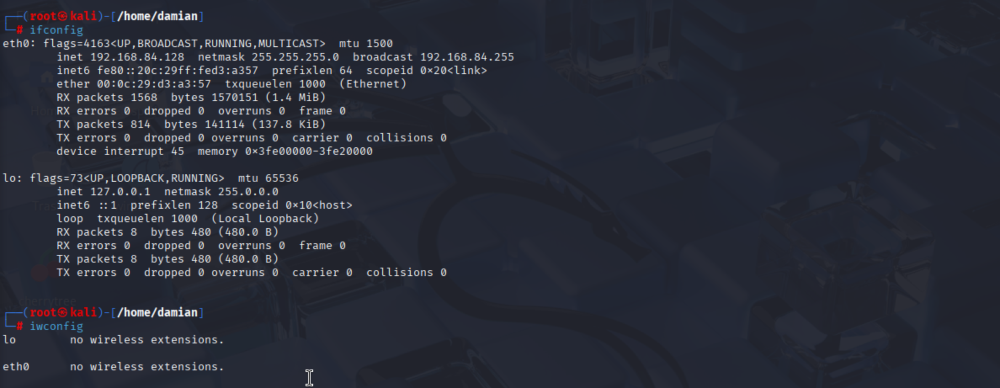
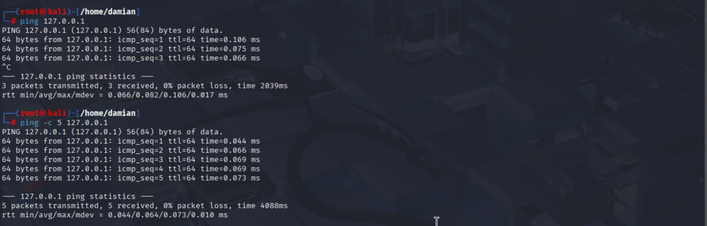
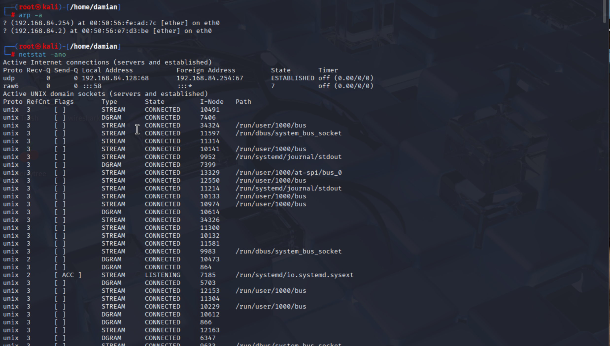
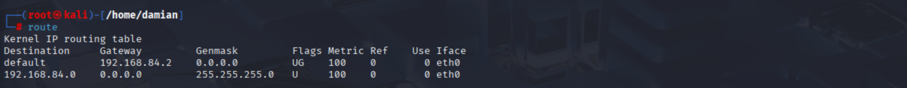

Common Networking Commands
ifconfig: Prints out the IP addresses, netmask, broadcast
iwconfig is similar but wireless
ping: Pings a server endlessly until ctrl+c is hit.
ping -c n: Pings a server n times.
arp: associates IP addresses with MAC addresses
This command broadcasts an address and it says who has this IP address? And then you get a response.
It's a way to interact with a machine you might not be aware of.
netstat: Shows you all open ports and what's connected to them (what the machine is talking out to)
route: Gives you a routing table
history: Shows history in the terminal; useful if you need to view or repeat certain commands since there are a lot of networking tools on linux.
You can also combine history with grep like history | grep ping shows all the commands you've done with "ping" in them